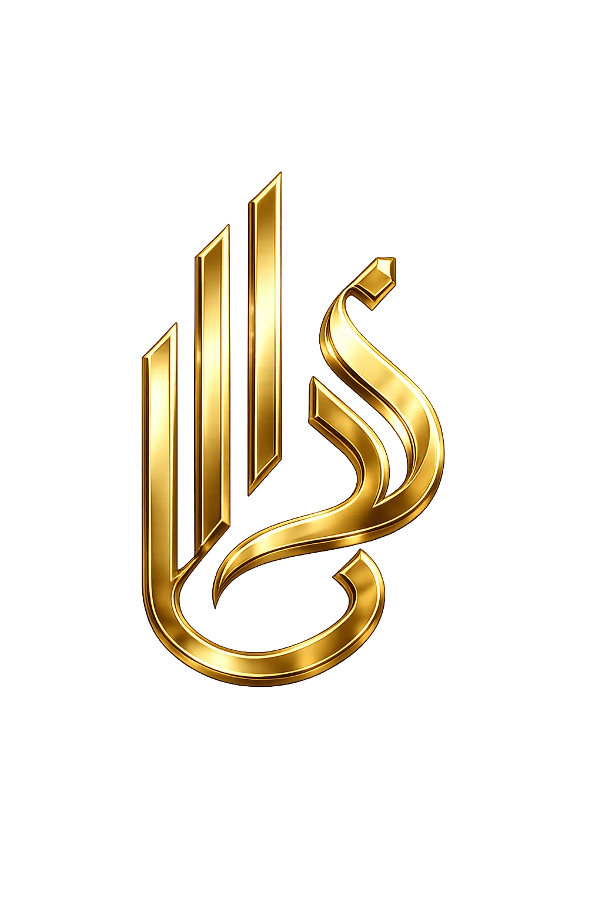
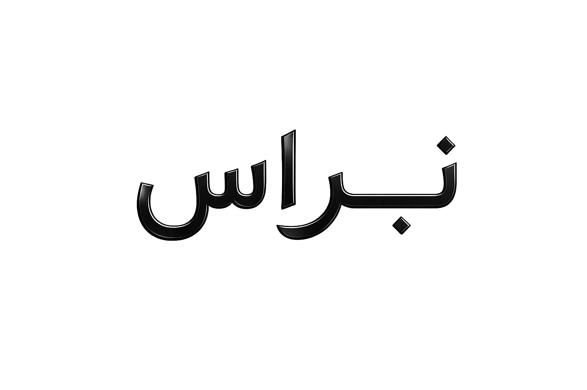

نبراس
استودیوی رسانه و خلاقیت
برای برندهایی که نمیخواهند فقط دیده شوند؛ میخواهند تجربه شوند، به خاطر بمانند و اثر بگذارند.
شروع یک پروژه ↗01 — درباره نبراس
نبراس یک استودیوی چندزبانه برای هویت بصری، تولید محتوای سینمایی و کمپینهای خلاق است. استراتژی، طراحی و تکنولوژی را کنار هم میگذاریم تا هر برند، جهان منحصربهفرد خودش را داشته باشد.
02 — تواناییهای ما
03 — منتخب آثار
04 — فرآیند ما
05 — پلتفرم آینده نبراس
کارفرما پروژه را به نبراس میسپارد؛ ما نیاز را تحلیل میکنیم، متخصص مناسب را انتخاب میکنیم و تا تحویل نهایی کنار پروژه میمانیم.
ثبت درخواست همکاری ↗